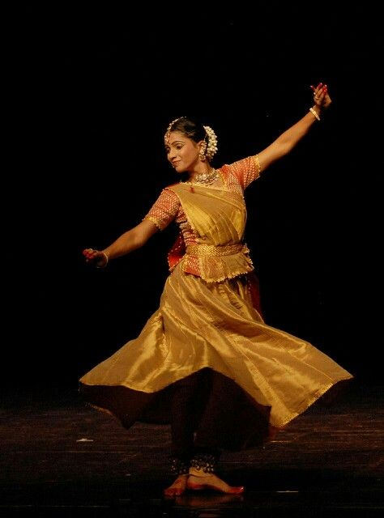

Gallery



Rooted in a rich legacy of classical dancers, KALAKALP Studio was founded with a deep commitment to preserving and promoting the timeless elegance of Kathak. We believe in nurturing not only technique but also the spirit of this classical art form through disciplined training and soulful performances. Our carefully crafted curriculum encompasses the foundational elements of Kathak — Tatkaar (footwork), Hastak (hand gestures), Abhinaya (expression), and the art of narrative storytelling through rhythm and movement. Whether you're a beginner or an advanced practitioner, MudraTaal Studio provides a space where tradition meets passion, allowing each dancer to explore the depth and grace of Kathak in its purest form.
| CLASS | SLOT | AGE GROUP | MODE |
|---|---|---|---|
| KATHAK (BEGINNERS) | SAT 10AM - 11AM | 7-12 YRS | OFFLINE |
| KATHAK (INTERMEDIATE) | SUN 11AM - 12PM | 13-18 YRS | OFFLINE |
| KATHAK (ONLINE SESSION) | MON 6PM - 7PM | ALL AGE GROUPS | ONLINE |
"My daughter has discovered the true joy of Kathak — every class brings her closer to her roots." – Anshu Sharma
"As a working professional, Kathak has become my form of meditation — it brings clarity, balance, and a renewed appreciation for our classical heritage." – Rahul Sethi
"A beautiful space where classical dance is taught with love, structure, and sincerity." – Rashi Makadia
"Learning Kathak at KALAKALP has deepened my connection to Indian culture and taught me the value of discipline through movement." – Yash Sharma
"KALAKALP Studio became more than a dance class for me — it became a sanctuary where tradition guided my spirit, and every movement felt like a return to something eternal." – Tintin
Address: KALAKALP Studio, Hyderabad, Bharat
Email: contact@kalakalp.in
Phone: +91 9876543210